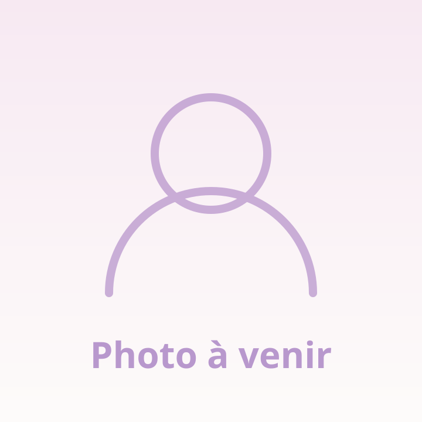

Pourquoi la kinésiologie
Grandir n'a pas d'âge. Oser être soi demande parfois du courage.

Géraldine
Kinésiologue en formationFemme, épouse, maman, sœur, amie… et avant tout curieuse de l'humain et de ses infinies capacités d'évolution.
"Grandir n'a pas d'âge. Oser être soi demande parfois du courage."
Mon chemin vers la kinésiologie n'a rien d'une ligne droite. Comme beaucoup des personnes que j'accompagnerai, je n'ai pas toujours avancé sur un chemin tranquille : des troubles du comportement alimentaire à l'adolescence, des fausses couches plus tard, qui ont marqué mon parcours de femme. Sur le moment, ces épreuves sont douloureuses. Avec le recul, elles deviennent des invitations à mieux comprendre qui l'on est réellement.
Avant la kinésiologie, j'ai passé treize ans à accompagner des personnes en situation de handicap mental dans le cadre de vacances adaptées, entre Montpellier et Perpignan. Ces années ont profondément marqué ma façon de voir le monde : l'écoute véritable, l'adaptation, le respect du rythme de chacun, l'accueil de chaque personne telle qu'elle est.
Chaque être humain possède en lui des ressources immenses, même lorsqu'il les a momentanément oubliées.
Mon chemin m'a amenée à explorer différentes approches : les livres, précieux compagnons de route ; les constellations familiales, qui m'ont permis de regarder mon histoire avec davantage de douceur ; la kinésiologie, qui a ouvert des portes que je ne soupçonnais pas. Et puis il y a eu le silence — une rencontre inattendue pour celle qui aime parler, échanger, rire et partager. J'y ai découvert un espace incroyable d'écoute, de recul et de reconnexion : la possibilité d'entendre ce qui se passe réellement à l'intérieur de soi.
Ma vision de l'accompagnement
Je ne crois pas aux solutions miracles. Je crois à la puissance de l'écoute, à l'importance d'être accueilli sans jugement, aux petits pas qui, mis bout à bout, créent de grands changements. Je crois que chacun possède déjà en lui une grande partie des ressources dont il a besoin — parfois, il suffit simplement d'un espace bienveillant pour les retrouver.
Pourquoi "Grandi-ose !"
Parce que grandir n'a pas d'âge. Parce qu'oser être soi demande parfois du courage. Parce que derrière nos peurs, nos blocages ou nos doutes se cache souvent une version de nous-même qui ne demande qu'à s'exprimer. Grandi-ose !, c'est une invitation : l'invitation à te rencontrer, à te découvrir autrement et à oser avancer vers toi-même.
Une première séance offerte
Encore en formation à Perpignan, je propose ma première séance gratuite, avec un suivi personnalisé à la suite. L'occasion idéale de découvrir la kinésiologie, sans engagement.
En savoir plusContinuer la visite
La kinésiologie
Une approche douce, à l'écoute du corps. Le test musculaire, le déroulement d'une séance, et à qui elle s'adresse.
Comprendre la méthodeQuestions fréquentes
Durée, tarif, âge, suivi médical : les réponses aux questions qui reviennent le plus souvent.
Lire les réponsesContact
À domicile ou dans un espace dédié, sur rendez-vous, à Thuir et ses environs.
Prendre rendez-vous